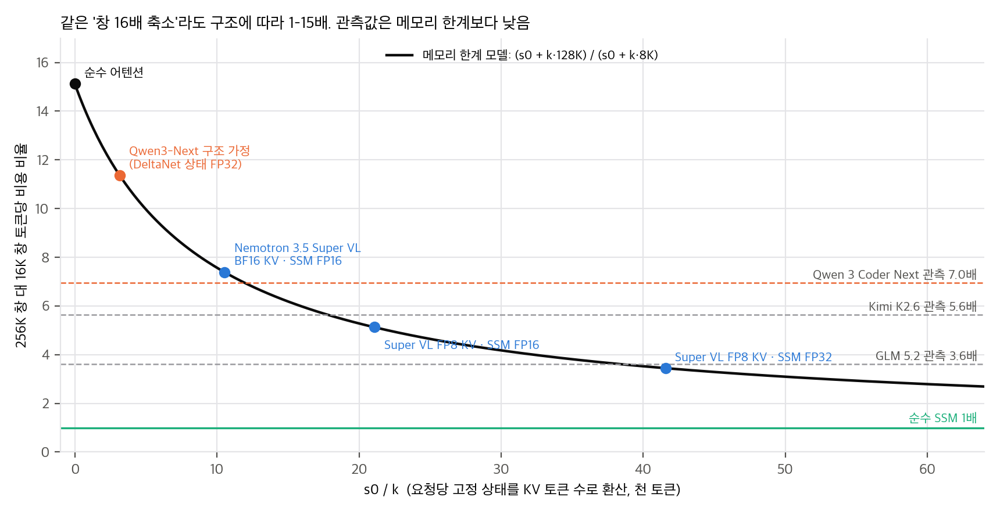
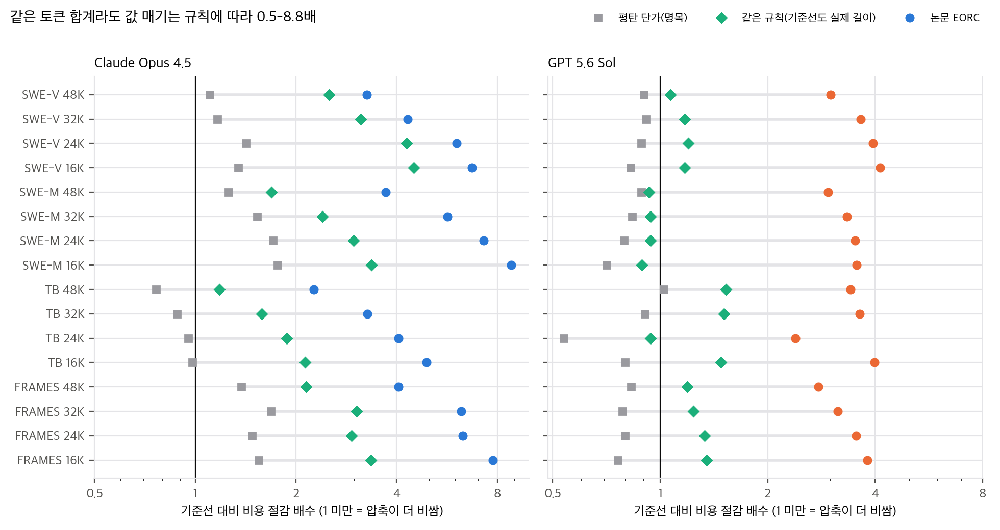
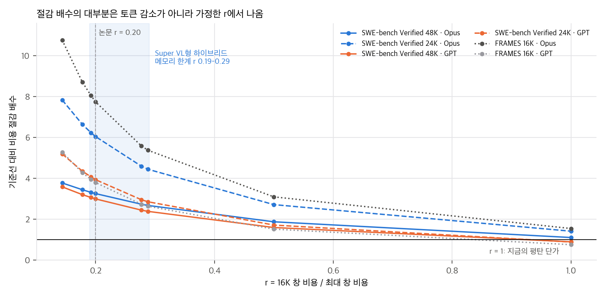
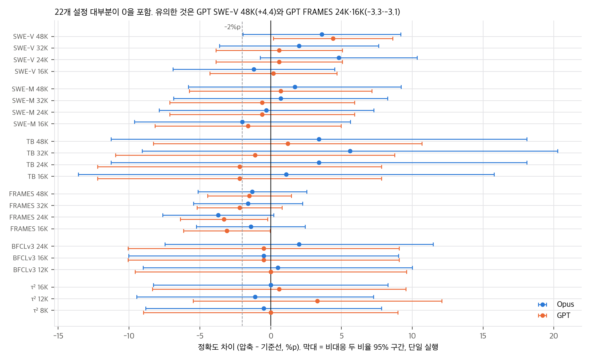

02 §4에 정리했습니다.질문은 RQ0 "긴 문맥이 필요한가?"이고, 이를 세 개로 나눕니다(§1).
| RQ | 질문 | 답의 근거 |
|---|---|---|
| RQ1 | 장기 과제(LCW1)를 긴 문맥 없이 풀 수 있나 | §3, Fig. 5, Table 3–8 |
| RQ2 | 긴 입력 과제(LCW2)를 긴 문맥 없이 풀 수 있나 | §4, Fig. 6, Table 11–17 |
| RQ3 | 문맥마다 행동을 하나만 해도 장기 과제를 풀 수 있나 | §5, Table 2 |
논리의 뼈대는 이렇습니다. 긴 입력 과제는 입력을 파일로 두고 선택해서 읽는 도구를 주면 장기 과제로 바뀝니다(§1, LCW2 → LCW1). 장기 과제는 대화 이력을 압축하면 짧은 문맥으로 풀 수 있습니다. 따라서 두 가지 모두 긴 문맥이 필요 없다는 결론입니다.
| 방식 | 동작 |
|---|---|
| FHA (Full-History Accumulation) | 행동과 관찰을 한 대화에 계속 붙입니다. mini-swe-agent 기본값이고 기준선입니다 |
| EoCC (End-of-Conversation Compaction) | 문맥이 압축 임계값을 넘으면 모델에게 인계 요약(handoff recap)을 쓰게 하고, 시스템 프롬프트 + 과제 + 요약으로 새 대화를 시작합니다. "총 문맥 한도 / 압축 임계값"(예: 24K / 18K)으로 적습니다. 한도는 요약 차례를 위한 여유이고, 그 안에 요약이 끝나지 않으면 대화를 끝냅니다 |
| SAC (Single-Action Compaction) | 대화마다 과제와 현재 의미 상태를 받아 행동 하나를 하고, 결과를 본 뒤 상태를 고쳐 쓰고, 대화를 버립니다 |
긴 입력은 input01.txt 같은 파일로 두고, 에이전트가 sed, awk, head, grep으로 필요한 부분만 읽게 합니다(§2.4.2, 부록 E).
저자들은 압축을 요약의 특수한 경우로 보면 손해라고 말합니다. 요약은 모든 사실에 같은 무게를 주고 반복된 부분을 과하게 강조합니다. 정확도를 가장 잘 지킨 압축에는 다음이 들어 있었습니다.
즉 실행 이력의 줄거리가 아니라 다음 실행을 위한 선별 브리핑입니다. mini-swe-agent용 압축 프롬프트(G.1)는 6항목입니다: Objective, Established facts, Applied changes, Verification, Dead ends, Remaining plan. 다만 {persistence}, {handoff_details}, {submission_reminder} 같은 자리표시자의 내용은 공개하지 않았습니다. 그래서 프롬프트는 윤곽(outline)만 있습니다.
로컬 측정(Fig. 2)은 DGX Spark에서 요청 하나씩, 길이를 늘려 가며 다음 1,024토큰의 평균 토큰 간 지연을 잽니다. 본문은 "여러 모델에서 뒤쪽 토큰 생성이 약 2배 오래 걸린다"고 씁니다.
| 설정 | Opus 정확도 | GPT 정확도 | Opus 명목 $ | GPT 명목 $ | Opus EORC $ | GPT EORC $ |
|---|---|---|---|---|---|---|
| 기준선 | 70.0 | 84.4 | 420.00 | 167.68 | 420.00 | 167.68 |
| 48K / 36K | 73.6 | 88.8 | 379.85 | 186.08 | 130.20 | 55.82 |
| 24K / 18K | 74.8 | 85.0 | 295.75 | 188.96 | 69.71 | 42.52 |
| 16K / 12K | 68.8 | 84.6 | 312.65 | 203.12 | 62.53 | 40.62 |
| 벤치마크 | Opus 기준선 → 압축 | GPT 기준선 → 압축 | 표 |
|---|---|---|---|
| LongBench v2 | 68.0 → 67.6 | 70.8 → 72.6 | 11 |
| LOONG (avg) | 70.1 → 79.3–80.2 | 79.3 → 82.7–84.6 | 12 |
| AA-LCR | 65.0 → 80.0 / 84.0 | 82.0 → 83.0 | 13 |
| NIAH | 60.0 → 100.0 | 80.0 → 100.0 | 14 |
| RULER (recall) | 62.5 → 95.7 | 65.5 → 96.4 | 15 |
| Counting-Stars (exact) | 65.1 → 81.2 | 76.6 → 81.2 | 16 |
| BABILong | 67.1 → 92.0 | 70.7 → 94.0 | 17 |
| 모델 · 벤치마크 | FHA | 최고 EoCC | SAC | 피크 문맥 중앙값/최댓값 (K): FHA → SAC |
|---|---|---|---|---|
| Opus · SWE-bench Verified | 70.0 | 74.8 (24K/18K) | 70.2 | 32/200 → 8/16 |
| Opus · Terminal-Bench 2.1 | 47.2 | 52.8 (32K/24K) | 51.8 | 27/130 → 9/19 |
| GPT · SWE-bench Verified | 84.4 | 88.8 (48K/36K) | 82.4 | 18/173 → 7/15 |
| GPT · Terminal-Bench 2.1 | 87.6 | 88.8 (48K/36K) | 84.3 | 17/133 → 8/37 |
SAC의 토큰 사용량과 비용은 보고하지 않았습니다.
설정은 48K/40K, 32K/24K, 16K/12K입니다. SWE-bench Verified에서 48K·32K일 때 Qwen 3.6 27B, Gemma 4 31B, MiniMax M2.7은 기준선의 ±1%p 안에 있습니다. Step 3.7 Flash는 −3.2·−5.4%p, Qwen 3 Coder Next는 −3.8·−12.6%p입니다. 16K/12K에서는 다섯 모델이 모두 떨어집니다(−3.6 ~ −49.4%p). 특히 Qwen 3 Coder Next는 53.0 → 3.6으로 무너집니다. 저자들은 궤적이 장황해서 압축 사이에 일할 공간이 남지 않기 때문이라고 설명합니다. 압축 후학습을 하지 않은 중소형 모델도 짧은 창에서 상당한 과제를 푼다는 것이 부록 D의 결론입니다. Terminal-Bench 2.1에서는 Qwen 두 모델이 오르고, Gemma·Step은 떨어지고, MiniMax는 비슷합니다.
SSSM은 (1) 대화 상태의 자연어 설명을 이해하고, (2) 다음 행동을 추론하고, (3) 행동하고, (4) 결과를 기록하고, (5) 다른 추론 인스턴스가 이어받을 수 있게 상태 설명을 고쳐 쓰도록 후학습한 모델입니다. 신경망 내부 상태를 넘기는 SSM과 달리 읽을 수 있는 자연어 상태를 넘긴다는 점에서 "semantic"이라고 부릅니다. 학습한 모델은 없고 개념 제안입니다.
저자가 밝힌 것(§3.1, §6): 압축은 손실이 있습니다. 긴 문맥이 도움이 되는 과제가 없다고 증명하지 않았고, 모든 과제를 짧은 문맥으로 풀 수 있다는 증명도 아닙니다.
논문에 적히지 않은 것(자세한 수치는 03, 04):
03 §1).04 C5). 오픈 모델 세 개에서 잰 r = 0.20을 구조를 모르는 닫힌 모델에 그대로 적용했습니다.03 §3).04 C11).04 C8).02 §1).계산은 모두 analysis/table_check.py(표 재계산)와 analysis/cost_model.py(장난감 모델)에 있고, 결과는 table_check_results.json, cost_model_results.json입니다. numpy, 단일 스레드, 각각 1초 안에 끝납니다.
Fig. 4와 §2.5의 측정은 "뒤쪽 토큰 하나"의 비용이 아닙니다. 창 크기 W로 설정한 서버에 요청 길이를 [0, W]에서 균일하게 뽑아 넣고, 포화 상태에서 낸 최대 처리량입니다. 이 규약에서 요청 하나의 평균 문맥은 약 W/2입니다(생성 중 평균 512토큰을 더함). 한편 Fig. 2는 배치 1에서 위치별 토큰 간 지연이고, 본문은 "약 2배"라고 씁니다. Abstract의 "뒤쪽 토큰이 최대 7배 비싸다"는 앞의 양(창 설정별 포화 처리량)을 뒤의 표현(위치별 비용)으로 말한 것입니다.
decode가 메모리 대역폭에 묶이고 KV 풀이 가득 찬 상태라면, 한 단계에 읽는 바이트(가중치 + 풀 전체)는 동시 요청 수와 관계없이 거의 일정합니다. 따라서 처리량은 동시 요청 수 B에 비례하고, B는 요청당 메모리에 반비례합니다.
| 구조 | s0 / k (토큰) | 메모리 한계 비율 | 근거 |
|---|---|---|---|
| 순수 어텐션 (GQA든 MLA든) | 0 | 15.1 | k 크기와 무관. MLA는 k만 줄임 |
| Kimi K2.6 가정 (MLA, FP8 KV) | 0 | 15.1 | Kimi K2 구조 가정 |
| Qwen3-Next 구조 가정, DeltaNet 상태 FP32 | 3,144 | 11.4 | KV 24,576 B/토큰, 상태 72 MiB |
| Qwen3-Next 구조 가정, 상태 BF16 | 1,608 | 12.9 | |
| Nemotron 3.5 Super VL, BF16 KV, SSM FP16 | 10,540 | 7.4 | nemotron35_super_vl config 검증값 |
| Nemotron 3.5 Super VL, FP8 KV, SSM FP16 | 21,079 | 5.1 | 같은 출처. repo의 교차점 20,480토큰과 일치 |
| Nemotron 3.5 Super VL, FP8 KV, SSM FP32 | 41,559 | 3.4 | |
| 순수 SSM | ∞ | 1.0 |

답: 그렇습니다. 같은 "창 16배 축소"가 순수 어텐션에서는 약 15배, Nemotron 3.5 Super VL 같은 Mamba 하이브리드에서는 3.4–7.4배, 순수 SSM에서는 1배의 비용 차이를 냅니다. 논문이 쓴 r = 0.20(5배)은 이 범위의 중간쯤에 있는 하나의 값일 뿐입니다.
| 모델 | 관측 | 메모리 한계 상한 | 비율 |
|---|---|---|---|
| GLM 5.2 | 3.61 | 구조 미확인 | — |
| Kimi K2.6 | 5.63 | 15.1 (순수 어텐션 가정) | 0.37 |
| Qwen 3 Coder Next | 6.95 | 11.4 (Qwen3-Next 구조 가정) | 0.61 |
순서가 메모리 모델과 반대입니다. 순수 어텐션인 Kimi(상한 15배)가 5.6배이고, 하이브리드인 Qwen(상한 11배)이 7배입니다. 메모리 한계 모델만으로는 이 순서를 설명할 수 없습니다. 16K 지점에서 메모리가 아닌 다른 한계(연산량, MoE 통신, 스케줄러의 동시 요청 상한)가 먼저 걸렸다는 뜻입니다. 활성 파라미터 3B인 Qwen은 16K에서 아주 많은 요청을 동시에 돌릴 수 있고, 32B급 활성 파라미터인 Kimi는 그 전에 연산에 막힌다고 보면 순서가 맞습니다. 이것은 가설이고, 논문은 동시 요청 수나 GPU 사용률을 보고하지 않아 확인할 수 없습니다.
결국 r은 구조만이 아니라 배치 구성(GPU 수, INT4 expert, 동시성 상한) 의 함수입니다. 세 오픈 모델의 r 평균을 구조와 서빙 방식을 모르는 Claude Opus 4.5·GPT 5.6 Sol에 그대로 적용한 것(부록 B)은 강한 가정입니다.
대역폭 한계에서 토큰 하나의 시간은 (가중치 읽기 + s0 + k · L) / 대역폭입니다. 배치 1에서는 s0/k보다 활성 가중치 읽기와 문맥 읽기의 비율이 비율을 정합니다.
nemotron35_bolt/ 분석의 "메모리 한계는 문맥이 아니라 가중치가 정한다"와 같은 결론입니다.정리하면 "뒤쪽 토큰이 약 2배 느리다"는 측정한 다섯 모델에서는 대체로 맞지만, 활성 가중치가 큰 하이브리드 MoE(Super VL, Bolt)에는 맞지 않습니다.
EORC 절감 배수 = (명목 비용 비율) × (1 / 단가 배수). Opus SWE-bench Verified 48K/36K를 예로 들면:
장기 과제 44개 칸에서 로그 절감 중 단가 배수가 차지하는 비율의 중앙값은 1.06입니다(범위 0.72–1.71). 1을 넘는 것은 명목 비용이 오히려 늘어서입니다. 절감의 거의 전부가 토큰을 덜 써서가 아니라 "짧은 창은 싸다"는 가정에서 나옵니다.

04 C5). 예: GPT SWE-bench Verified 167.68 → 186.08–203.12, FRAMES 206.64 → 248.84–271.68.
| SWE-bench Verified | r = 0.144 | 0.20 (논문) | 0.278 | 0.288 (Super VL FP32형) | 0.5 | 1.0 (평탄) |
|---|---|---|---|---|---|---|
| Opus 48K/36K | 3.78 | 3.26 | 2.74 | 2.68 | 1.88 | 1.11 |
| GPT 48K/36K | 3.59 | 3.00 | 2.45 | 2.39 | 1.60 | 0.90 |
(이 표는 K = 1,000으로 계산해서 논문의 Opus 3.23과 0.03 차이가 납니다.) Super VL 같은 하이브리드 서빙을 전제하면(r ≈ 0.19–0.29) 절감은 논문 값의 약 70–100%로, 순수 SSM이면(r = 1) 명목 비율로 떨어집니다.
부록 B는 FHA 기준선에 W = W_max, 즉 배수 1을 매깁니다. 1.1의 측정 규약에서 "창 W의 가격"은 요청 길이가 [0, W]에 균일하게 퍼진 서버의 평균 가격입니다. 그런데 FHA 요청 대부분은 짧습니다. Opus SWE-V의 최종 길이는 평균 48K, 중앙값 32K, 최댓값 200K입니다. vLLM의 paged KV는 설정 창이 아니라 실제 길이만큼 메모리를 씁니다. 그래서 기준선에 배수 1을 매기면 기준선이 실제보다 비싸게 잡힙니다.
같은 규칙: 요청마다 Eq. 2를 W = 2c(c = 그 요청의 문맥)로 적용합니다. 1.1의 규약과 같은 선형 모델입니다. 몬테카를로로 추정했습니다(cost_model.py M5).
| 논문 EORC 절감 | 같은 규칙 절감 | 기준선 평균 배수(캐시 입력) | |
|---|---|---|---|
| Opus (SWE-V, SWE-M, TB, FRAMES 16칸) | 2.26–8.82 | 1.18–4.50 | 0.44–0.85 |
| GPT (같은 16칸) | 2.39–4.13 | 0.89–1.53 | 0.28–0.50 |
32칸 중 5칸(GPT SWE-M 4칸, GPT TB 24K)은 1 미만, 즉 압축이 더 비쌉니다. 중앙값으로 같은 규칙 절감은 논문 값의 0.42배입니다.
이 추정의 한계:
결론: 짧은 문맥이 싸다는 방향은 맞지만, 그 크기는 "기준선이 실제로 얼마나 긴 요청을 보냈는가"에 크게 좌우됩니다. 논문은 토큰 합계만 보고하고 요청별 길이 분포는 보고하지 않아서, 논문 자료만으로는 이 차이를 닫을 수 없습니다.

| 벤치마크 | 입력 길이 (§2.2) | 기준선 과제당 평균 입력 (Opus / GPT) | Opus 창 200K | GPT 표준 창 272K |
|---|---|---|---|---|
| NIAH | 16K – 약 500K | 118K / 108K | 일부 초과 | 일부 초과 |
| RULER | 256K, 500K | 과제 수 미보고 | 전부 초과 | 500K 초과 |
| BABILong | 64K – 1M (5단계) | 131K / 126K | 일부 초과 | 일부 초과 |
| LongBench v2 | 8K – 약 200만 단어 | 다회 호출이라 비교 불가 | 일부 초과 | 일부 초과 |
| AA-LCR | 평균 약 100K | 104K / 94K | 대부분 안 | 안 |
| Counting-Stars | 4K – 128K | 49K / 49K | 안 | 안 |
공식 코드가 없어서 논문 표·식·본문 수치를 다시 계산하는 방식으로 검증했습니다. 스크립트는 analysis/table_check.py, analysis/cost_model.py이고 결과는 같은 이름의 *_results.json입니다. 비공식 재현 저장소 하나(che-shr-cat/short-context-agent, bf534c4)를 clone해 정적으로 대조했습니다. 그 저장소의 코드는 실행하지 않았습니다.
판정 기호: ✓ 재현됨 · △ 대체로 맞지만 조건·사소한 불일치 · ✗ 표현이 데이터와 맞지 않음 · ? 논문 자료로 확인 불가
| # | 주장 (위치) | 재계산 | 판정 |
|---|---|---|---|
| C1 | 16K 대비 256K 비용 3.6·5.6·7배, r = 0.20 (Eq. 1, Fig. 1·4) | 1/r = 3.61, 5.63, 6.95. 평균 r = 0.1996 → 0.20 | ✓ |
| C2 | 명목 비용 = 반올림한 토큰 합계 × 공개 단가 (Table 3–8, 11–17 캡션) | 90칸 모두 정확히 일치 | ✓ |
| C3 | EORC = Eq. 2–4 | 90칸 중 84칸이 ±0.005달러 안. Opus의 SWE-V·TB·FRAMES는 K = 1,024, 나머지는 K = 1,000으로 맞습니다(예: Opus SWE-V 48K는 K = 1,024면 130.20, 1,000이면 128.82). SWE-bench Multilingual의 48K·32K·24K 6칸(두 모델)은 어느 쪽으로도 0.20–0.36달러(최대 1.2%) 어긋납니다. 16K 칸(배수 0.2 고정)은 정확합니다 | △ 사소 |
| C4 | 절감 배수 장기 Opus 2.2–8.8, GPT 2.4–5.0, 긴 입력 Opus 6.5–54.6, GPT 4.4–233.3 (§3, §4) | 표 값으로 2.23–8.82, 2.39–4.98, 6.52–54.41, 4.39–233.33. 54.6은 NIAH 74.00 / 1.36 = 54.4와 0.2 차이(반올림 전 값 사용으로 보임) | ✓ |
| C5 | 압축 때문에 토큰이 늘어 절감이 사라지는 일은 "대체로 없었다" (§3) | EORC에서만 맞습니다. 공개 단가(평탄)로는 압축이 GPT 22개 중 21개, Opus 22개 중 7개 설정에서 비용을 늘립니다. GPT 출력 토큰은 SWE-V 3.1M → 최대 5.3M. 반대로 프롬프트 캐시가 없다고 가정하면 44개 중 37개에서 압축이 쌉니다(0.74–4.29배, C13) | △ 조건부 |
| C6 | 정확도 표의 값 (Table 2–8, 11–17) | 표본 수 n으로 k/n이 되는지 확인. 맞지 않는 값 3개: SAC Opus TB 51.8(46/89 = 51.69, 본문 "+4.6"도 이 값에 기댐), τ² Opus 12K/8K 78.2(144/184 = 78.26), FRAMES Opus 기준선 81.0(667/824 = 80.95, 668/824 = 81.07). 나머지는 모두 정수 개수와 맞습니다. GPT SAC TB 84.3 = 75/89는 본문과 일치 | △ 사소 |
| C7 | 정확도 차이 Opus −3.7 ~ +5.6, GPT −3.3 ~ +4.4. 2%p 넘게 잃은 설정은 22개 중 5개 이하 (§3) | 범위 일치. 2%p 초과 손실 Opus 1개(FRAMES 24K), GPT 5개(TB 24K·16K, FRAMES 32K·24K·16K) | ✓ |
| C8 | 압축이 "같거나 약간 낫다" (§6, 부록 C), 최고 EoCC +4.8·+4.4 (Table 3) | 단일 실행. 44개 차이 중 p < 0.05는 3개(GPT SWE-V 48K +4.4, GPT FRAMES 24K −3.3, 16K −3.1). "최고 EoCC"는 4개 중 최댓값이라 귀무에서도 평균 +1.7 ~ +5.5%p(03 §4). "같다"는 맞고 "약간 낫다"는 근거 부족 |
△ 과장 |
| C9 | SAC가 Opus 기준선을 유지·개선하고 GPT는 조금 잃는다. 피크 최댓값 130–200K → 15–37K (§5, Table 2) | 차이 +0.2, +4.6, −2.0, −3.3%p 모두 p > 0.39. 피크 축소 3.6–12.5배는 표와 일치. SAC의 토큰·비용은 보고하지 않음 | ✓ (비용 미보고) |
| C10 | "뒤쪽 토큰이 앞쪽보다 최대 7배 비싸다" (Abstract) | 7배는 창 설정별 포화 처리량 비율(요청 길이 균일)이고, 위치별 지연은 Fig. 2의 약 2배. 같은 규약의 메모리 한계 비율은 순수 어텐션 15.1, Super VL 3.4–7.4, 순수 SSM 1.0. 관측 순서(Kimi 5.6 < Qwen 7.0)는 메모리 모델과 반대라 서빙 한계도 섞여 있음(03 §1) |
✗ 표현 부정확, 구조·배치 의존 |
| C11 | 긴 입력에서 선택 읽기가 기준선을 크게 앞선다: RULER +33, NIAH +40, BABILong +25%p (§4, Table 14–17) | RULER 입력(256K·500K)은 모두 Opus 창(200K)보다 깁니다. NIAH(최대 약 500K)·BABILong(최대 1M)도 일부 초과합니다. 기준선 과제당 평균 입력은 NIAH 118K, BABILong 131K로 전체 길이 평균보다 훨씬 작습니다. 넘친 입력의 처리(잘라내기 등)는 적혀 있지 않습니다. 비교 대상도 "붙여 넣기 대 파일 + grep"이라 문맥 길이 효과와 검색 도구 효과가 섞입니다 | ? 상한으로 읽어야 함 |
| C12 | 오픈 모델도 짧은 창에서 상당한 과제를 푼다 (부록 D) | 16K/12K에서 SWE-V 변화 −3.6(Qwen 3.6), −49.4(Qwen 3 Coder Next), −7.2(Gemma), −13.4(Step), −4.8(MiniMax)%p. "모델마다 다르다"는 본문 서술과 일치 | ✓ |
| C13 | 단어당 약 1.33토큰 (Table 1) | 8개 작품 중 7개가 1.327–1.333, 『노인과 바다』만 37/27 = 1.37(반올림) | ✓ |
| C14 | 닫힌 모델에도 r = 0.20 적용 (부록 B) | 측정할 수 없는 가정. r = 0.288(Super VL FP32형)이면 절감이 약 70–100%로, r = 1이면 명목 비율(0.5–1.8배)로 떨어짐(03 §3.3) |
? 가정 |
| C15 | 기준선을 W_max(배수 1)로 매김 (부록 B) | 기준선 FHA 문맥 대부분은 짧습니다(Opus SWE-V 중앙값 32K). 요청마다 같은 규칙을 적용한 몬테카를로 추정에서 절감은 Opus 1.18–4.50배, GPT 0.89–1.53배(32칸 중 5칸이 1 미만). 가정에 민감한 근사(03 §3.4) |
△ 비교 규칙이 기준선에 불리 |
| C16 | 긴 입력 과제는 언제나 장기 과제로 바꿀 수 있다 (§1) | 원리상 맞습니다(파일 + 읽기 도구). 그러나 비용과 정확도는 정답 근거를 문자열 검색으로 찾을 수 있는지에 달립니다. 저자도 NIAH의 어휘 겹침을 인정합니다. 책 전체 요약처럼 모든 부분을 봐야 하는 과제는 실험하지 않았습니다 | ? 범위 밖 |
che-shr-cat/short-context-agent(MIT, bf534c4, 2026-11-05)는 Claude skill(선택 읽기, 인계 브리프, 재개 규약)과 참조 하네스 scripts/sac_harness.py(324줄, fha·eocc·sac 세 모드)로 구성됩니다. README가 스스로 "방법 재현이지 결과 재현이 아니다"라고 밝힙니다.
| # | 항목 | 논문 | 비공식 구현 | 영향 |
|---|---|---|---|---|
| U1 | 하네스 | mini-swe-agent v2.4와 그 일반화인 mini-agent(부록 G) | 자체 ReAct 루프, Anthropic Messages API의 tool_use로 bash 도구 하나. 기본 모델 claude-sonnet-4-6 |
논문 수치와 직접 비교할 수 없음 |
| U2 | 한도 처리 | 총 한도는 요약 차례를 위한 여유이고, 그 안에 요약이 끝나지 않으면 대화를 끝냄(§2.4.1) | 한도는 호출별 max_tokens = max(512, min(max_output, limit − est_ctx))로만 씀. 512 하한 때문에 한도를 넘을 수 있고, 종료 처리는 없음 |
16K/12K처럼 빠듯한 설정에서 행동이 달라질 수 있음 |
| U3 | 압축 시점 | "임계값에 다가가면"(구체 규칙 미기재) | API가 보고한 문맥 + 도구 결과 글자 수 ÷ 4 ≥ 임계값 | 근사 추정. 논문도 규칙을 적지 않아 판단 불가 |
| U4 | 압축 프롬프트 | G.1 6항목. {persistence}, {handoff_details}, {submission_reminder} 내용 비공개 |
같은 6항목에 "확인됨/가설" 목록 분리, 디스크에서 다시 읽을 수 있는 것은 넣지 않는 규칙, 재개 규약을 덧붙임. 별도 호출에서 tool_choice: none, 출력 1,500토큰 |
논문의 자리표시자 내용을 채운 한 가지 해석 |
| U5 | 버린 대화 기록 | §3.1에서 제안. 실험에서 썼다는 서술은 없음 | 버린 대화를 JSONL로 남겨 grep으로 다시 읽게 함(--log) |
논문보다 한 단계 더 나아간 설계 |
| U6 | 관찰 자르기 | mini-swe-agent 기본 동작(G.1: "잘린 출력은 좁은 명령으로 다시 받으라") | 4,000자, 앞 2/3 + 뒤 1/3 | 관찰이 큰 과제에서 토큰 수가 다름 |
| U7 | 기본 설정 | 장기 과제 48/36, 32/24, 24/18, 16/12K 네 가지 | 24K/18K 기본. "16K/12K는 간결하고 강한 모델에만" | 논문 부록 D와 맞는 권고 |
| U8 | 프롬프트 캐시 | 결과 표에 캐시 입력을 따로 집계(FHA 비용의 24–60%) | 시스템 프롬프트에만 cache_control을 붙임 |
대화 접두사가 캐시되지 않으면 FHA 비용이 크게 오르고, 압축이 평탄 단가에서도 싸 보임(C5, C13) |
| U9 | 검증 | 13개 벤치마크 | --dry-run(가짜 모델로 리셋 경로만 확인), tests/smoke.sh(API 키 없이 manifest, doc-read, 훅 확인), 평가 사례 3개 |
결과 재현 없음 |
max_num_seqs 등). 16K에서 무엇이 처리량을 막았는지 알 수 없습니다.쉽습니다. 하네스에 수십–수백 줄을 더하는 일입니다: 문맥 크기를 세고, 임계값에서 압축 프롬프트를 한 번 보내고, 시스템 프롬프트 + 과제 + 요약으로 대화를 다시 시작합니다. 긴 입력은 문서를 파일로 두고 bash 도구를 주면 됩니다. 학습이 필요 없습니다.
이 맥은 Apple M4 Pro, 통합 메모리 24 GiB, CUDA 없음입니다.
03 §1.4).논문 표의 명목 비용(2026-09-29 단가, Opus 4.5 $5/$25, GPT 5.6 Sol $4/$20)을 과제당으로 나눴습니다(table_check_results.json C12). 다른 모델은 그 모델 단가로 비례 환산해야 합니다.
| 벤치마크 | Opus 기준선 | Opus 가장 싼 압축 설정 | GPT 기준선 | GPT 가장 싼 압축 설정 |
|---|---|---|---|---|
| SWE-bench Verified | $0.84 | $0.59 | $0.34 | $0.37 |
| Terminal-Bench 2.1 | $0.99 | $1.01 | $0.55 | $0.53 |
| FRAMES | $0.62 | $0.37 | $0.25 | $0.30 |
| NIAH | $0.59 | $0.03 | $0.45 | $0.006 |
| BABILong | $0.66 | $0.10 | $0.52 | $0.03 |
| 범위 | 가능 여부 |
|---|---|
| 방법 구현(EoCC, SAC, 선택 읽기) | 가능. 수십–수백 줄, 학습 없음 |
| 이 맥 + 작은 로컬 모델로 긴 입력 선택 읽기 확인 | 조건부 가능(로컬 런타임 설치·모델 다운로드 승인 필요, 미검증) |
| 이 맥 + API로 SWE-bench Verified 일부 | 조건부 가능(API 비용 약 $40–70/50과제/설정 2개, SWE-bench Docker의 Apple Silicon 동작 미확인) |
| 처리량 측정(Fig. 1·4) | 불가(H100 8–16장) |
| 논문 규모 재현 | 불가(약 $17,500) |
논문에는 관련 연구 절이 없습니다. 참고문헌 52개는 벤치마크, 모델 카드, 하네스, 문학 작품, SSM 원논문, Turing(1936)이 대부분입니다. 아래 §1–§2의 "논문이 인용하지 않은" 항목은 내가 알고 있는 선행연구이고, 이 저장소에서 원문을 다시 확인하지는 않았습니다.
| 흐름 | 논문이 인용한 것 | 논문이 인용하지 않은 가까운 것 |
|---|---|---|
| 긴 문맥 비용 | 어텐션 계산량이 문맥 깊이에 선형이라는 분석 [25], NVFP4 [1], 양자화·희소화 [5, 8, 14] | KV 캐시 축출·압축(StreamingLLM, H2O, SnapKV 계열). 같은 비용 문제를 추론 쪽에서 푸는 방법입니다 |
| 상수 비용 구조 | SSM 원논문 [18–20]. 각주 1에서 "상수 비용 구조는 여러 번 제안됐지만 완전히 받아들여진 적이 없다"고 씁니다 | 2026년에는 하이브리드가 주류 중 하나입니다. 논문의 로컬 모델 둘(Qwen 3.6 27B, Qwen 3 Coder Next)이 Gated DeltaNet 하이브리드이고, NVIDIA 자신의 Nemotron 3.5도 Mamba 하이브리드입니다(§5) |
| 긴 문맥 평가 | NIAH [24], RULER [22], LongBench v2 [6], LOONG [45], BABILong [28], Counting-Stars [39], AA-LCR [4], Lost in the Middle [29] | — |
| 에이전트 하네스 | ReAct [49], SWE-bench [23], SWE-agent·mini-swe-agent [41, 47], SWE-bench Multilingual [48], WebArena [52], FRAMES [27] | SWE-agent의 history processor(오래된 관찰을 접어 둠), OpenHands의 condenser 같은 하네스 쪽 문맥 관리 |
| 에이전트 메모리·압축 | 없음 | MemGPT(Packer et al., 2023, arXiv:2310.08560) → Letta. 상용 코딩 에이전트의 자동 압축(Claude Code의 /compact와 auto-compact 등) |
| 긴 문서 읽기 에이전트 | 없음 | ReadAgent(Lee et al., 2024, arXiv:2402.09727): 문서를 쪽으로 나눠 gist 메모리를 만들고 필요한 쪽만 다시 읽습니다. RQ2의 "선택 읽기 + 압축"과 가장 가깝습니다 |
| 검색 증강 | 없음 | RAG 일반, 이 저장소의 RAG-Anything(§5) |
정리: 실험 설계(EoCC, 선택 읽기)는 이미 널리 쓰이는 하네스 기법입니다. 이 논문이 새로 보탠 것은 세 가지입니다. (1) 닫힌 최신 모델 둘로 13개 벤치마크에 걸쳐 같은 방법을 체계적으로 잰 것, (2) 처리량 측정으로 "짧은 문맥의 비용 이점"을 정량화하려 한 것, (3) SAC와 SSSM이라는 극단으로 밀어 본 것입니다.
| 대안 | 무엇을 대신하나 | 논문에서 |
|---|---|---|
| 관찰 마스킹·자르기(LLM 호출 없음) | EoCC의 요약 호출 | 부록 A가 "message pruning"을 탐색했다고만 쓰고 수치가 없습니다 |
| RAG(임베딩 검색) | RQ2의 grep 선택 읽기 | 비교하지 않습니다. 기준선은 "문서를 통째로 붙여 넣기" 하나입니다 |
| 같은 길이 예산으로 자른 붙여 넣기 | RQ2 기준선 | 기준선은 문서를 작업 대화에 통째로 붙여 넣습니다(부록 F). 비교 대상이 "붙여 넣기 대 파일 + grep"이라서, 차이가 짧은 문맥 덕인지 정확한 문자열 검색 덕인지 나눌 수 없습니다(04 C11) |
| 하이브리드·선형 어텐션 구조 | "짧은 문맥이 싸다"는 전제 | 구조에 따라 비용 비율이 크게 달라진다는 점을 다루지 않습니다(03 §1) |
| KV 축출·압축 | 문맥 길이 자체를 줄이는 것 | 다루지 않습니다 |
| 구성 요소 | 논문 위치 | 출처 |
|---|---|---|
| FHA 루프 | §2.4, 부록 G | mini-swe-agent v2.4 [41], ReAct [49] |
| EoCC | §2.4.1, Fig. 3 | 하네스 관행. 한도/임계값 두 값과 대화 재시작 |
| 압축 프롬프트 6항목 | 부록 A, G.1 | 저자 설계. 자리표시자 내용은 비공개 |
| mini-agent | 부록 G.2 | mini-swe-agent에서 SWE 전용 지시를 뺀 일반화 |
| 선택 읽기 | §2.4.2, 부록 E | sed·awk·head·grep. 문서를 파일로 둠 |
| SAC | §2.4.1, §5 | 저자 설계 |
| 처리량 → 비용 | §2.5, Fig. 1·4, Eq. 1 | vLLM, H100, $3.85/GPU-h(Nebius, 2026-09) |
| EORC | 부록 B, Eq. 2–4 | 저자 설계. r = 0.20, 선형 보간 |
| SSSM | §5.1 | 개념 제안 |
공식 코드는 없습니다. 연구실 페이지 두 곳은 arXiv 링크만 겁니다.
| 저장소 | 역할 | 라이선스 | ★ | 마지막 push | 커밋 |
|---|---|---|---|---|---|
| (공식 코드) | — | — | — | — | 없음. nv-dler.github.io, research.nvidia.com/labs/lpr/lfi/ 모두 arXiv 링크만 |
| che-shr-cat/short-context-agent | 비공식 재현. Claude skill + EoCC/SAC 참조 하네스. "방법 재현이지 결과 재현이 아님"이라고 README에 명시 | MIT | 3 | 2026-11-05 | bf534c4 (shallow clone, 정적 대조만) |
| Macro-Harder/context-compaction | 비공식 구현 | Apache-2.0 | 0 | 2026-11-09 | clone 안 함 |
| SWE-agent/mini-swe-agent | 논문이 쓴 하네스(v2.4). 태그 v2.4.4–v2.4.6 존재 | MIT | 9,430 | 2026-11-02 | HEAD 04d809c (clone 안 함) |
| SWE-bench/SWE-bench | SWE-bench Verified·Multilingual 평가 | MIT | 6,162 | 2026-09-18 | — |
| harbor-framework/terminal-bench-1 | Terminal-Bench (laude-institute/terminal-bench에서 이동) | Apache-2.0 | 2,615 | 2026-07-11 | — |
| sierra-research/tau2-bench | τ²-bench | MIT | 2,419 | 2026-11-05 | HEAD 033bf08 |
| ShishirPatil/gorilla | BFCL | Apache-2.0 | 13,065 | 2026-10-17 | — |
| NVIDIA/RULER | RULER | Apache-2.0 | 1,631 | 2026-11-03 | HEAD db43f92 |
| gkamradt/needle-in-a-haystack | NIAH | 표기 없음(NOASSERTION) | 2,406 | 2026-06-08 | — |
| THUDM/LongBench | LongBench v2 | MIT | 1,254 | 2025-01-15 | — |
| MozerWang/Loong | LOONG | Apache-2.0 | 154 | 2025-12-22 | — |
| booydar/babilong | BABILong | Apache-2.0 | 259 | 2026-06-01 | — |
| nick7nlp/Counting-Stars | Counting-Stars | MIT | 83 | 2025-11-24 | — |
| letta-ai/letta | MemGPT 계열 에이전트 메모리(인용 안 됨) | Apache-2.0 | 25,388 | 2026-10-18 | — |
AA-LCR은 Hugging Face 데이터셋(ArtificialAnalysis/AA-LCR)입니다. 같은 연구실의 다른 작업으로 AgentBaton이 연구실 페이지에 올라 있습니다.
연결이 강한 순서로 적었습니다. 억지로 잇지 않으려고 약한 연결은 약하다고 적었습니다.
| 폴더 | 관계 | 강도 |
|---|---|---|
nemotron35_super_vl/ |
이 논문의 비용 모델을 검증하는 데 직접 썼습니다. Super VL은 Mamba 40층 + attention 8층이라, 요청당 SSM 상태(FP16 80 MiB + conv 2.34 MiB)가 FP8 KV 약 2만 토큰 분량입니다. 그래서 같은 측정 규약에서 256K 대 16K 비용 비율의 메모리 한계가 3.4–5.1배로, 순수 어텐션(약 15배)보다 훨씬 작습니다(03 §1). 같은 NVIDIA에서 나온 두 결과가 "짧은 문맥이 얼마나 싼가"에 다른 답을 줍니다 |
강함 |
nemotron35_bolt/ |
로컬 장치 쪽 근거입니다. Bolt 분석은 "Mamba 층 덕분에 256K에서도 KV(F16)가 2.15 GB이고, 메모리 한계는 문맥이 아니라 가중치가 정한다"고 결론 냈습니다. Fig. 2의 "뒤쪽 토큰이 약 2배 느리다"는 활성 가중치가 큰 하이브리드 MoE에는 맞지 않습니다(Super VL 대역폭 모델에서 256K에 1.10배). 반면 활성 3B인 하이브리드 Qwen 3 Coder Next는 Fig. 2에서 약 1.9배라, 구조 이름보다 활성 가중치와 KV 읽기의 비율이 중요합니다(03 §1.4) |
강함 |
rag_anything/ |
RQ2의 대안입니다. 이 논문은 grep·sed로 필요한 부분만 읽고, RAG-Anything은 지식 그래프와 임베딩 색인으로 찾습니다. 이 논문은 RAG 기준선과 비교하지 않았습니다. 논문 코퍼스 검색 도구로서는 색인 없이 grep만으로 어디까지 되는지가 실용적 질문입니다 | 중간 |
agentic_wam/ |
이력을 압축하는 방식의 대비입니다. AW-0 논문은 이전 코드 조각을 학습형 K개 슬롯으로 압축한다고 쓰지만, 공개 설정은 그 메모리를 켜지 않고 이전 조각을 텍스트(# Completed:)로 넣거나 마지막 조각만 넣습니다(agentic_wam/analysis/04_code_verification.md D2). 실제 공개본이 쓰는 방식은 이 논문의 자연어 상태(SSSM)에 더 가깝습니다. 영역(로봇 정책 대 LLM 에이전트)은 다릅니다 |
중간 |
weight_space_programming/ |
블로그의 실험 8에서 MATH-500 답의 93%가 32,768토큰 상한에 걸렸고(반복), 블로그도 "문맥 길이와 하네스 비효율"을 한계로 꼽습니다. 장기 에이전트 실행에서 문맥이 병목이라는 사례입니다. 압축으로 풀리는 문제인지는 확인할 수 없습니다 | 약함 |
chronospolicy/ |
로봇 정책은 원래 짧은 관측 이력(카메라당 영상 2장 + 자세 2개)으로 동작합니다. 이 논문의 주장이 로봇 정책 쪽에서는 새롭지 않다는 정도의 연결입니다 | 약함 |
openwam/ |
OpenWAM은 현재 관측 프레임과 지시문만 조건으로 씁니다. 긴 이력 문제가 평가 설정에 나오지 않아 의미 있는 연결이 없습니다 | 없음 |